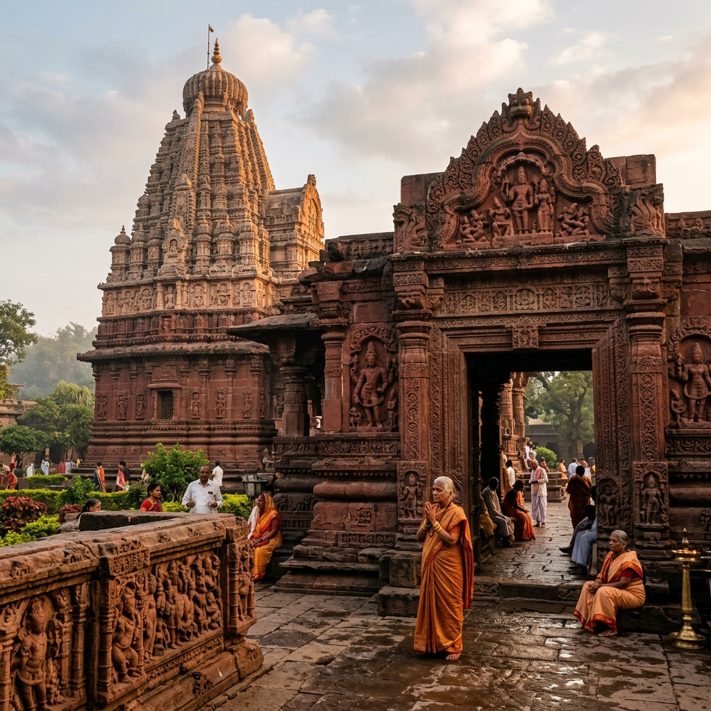

Grishneshwar Jyotirlinga
Aurangabad, Maharashtra
The Sacred Legacy

Grishneshwar (also spelled Ghrishneshwar or Ghushmeshwar) is the 12th and final of the sacred Jyotirlingas completing the divine circuit of 12 sacred sites where Lord Shiva manifested as infinite light. Located at Verul in Aurangabad district, the temple is intimately adjacent to the UNESCO World Heritage Ellora Caves, which house extraordinary Buddhist, Hindu, and Jain rock-carved temples spanning the 6th to 11th centuries CE making this region one of the most extraordinarily dense concentrations of sacred art and architecture anywhere on Earth.
The current magnificent red stone temple was built by the great queen Ahilyabai Holkar of Indore in the 18th century the same devout queen who also restored and built dozens of important temples across India including Kashi Vishwanath, Somnath, and Gaya. The legend of this Jyotirlinga involves Kusuma, a devoted woman whose husband killed her son out of jealousy Lord Shiva, moved by her unbroken devotion even in the face of this tragedy, resurrected her son and granted her husband liberation, then remained at this site as Grishneshwar.
Ahilyabai's Temple
The magnificent red Yeola stone temple built by Ahilyabai Holkar is a masterpiece of 18th-century Maratha architecture. The five-tiered Shikhara is covered in intricate sculptural work. The inner sanctum houses the Shivlinga in a pit the devotee looks downward to worship a unique feature among all Jyotirlingas. The temple complex includes a sacred tank with the capacity to purify through bathing.
Ellora Connection
The Ellora Caves complex just 0 km from the temple contains 34 rock-carved monasteries and temples including the magnificent Kailasa Temple (Cave 16) carved top-down from a single mountain rock, considered the greatest sculptural achievement of ancient India. Visiting Grishneshwar and Ellora in a single pilgrimage provides an unparalleled experience of India's sacred heritage both in living temple tradition and magnificent ancient art.
The Legend of Kusuma
The legend of Grishneshwar uniquely focuses on a woman's devotion. Kusuma made 101 Shivalingas from cowdung daily and worshipped them with absolute devotion despite her husband's jealousy. When her husband killed their son, she continued her worship. Lord Shiva, overwhelmed by this transcendent faith that persisted even through human tragedy, resurrected her son and declared this site his eternal abode specifically to honour the power of a woman's unbreakable faith.
Completing the 12
For devoted pilgrims undertaking the Dwadash Jyotirlinga Yatra (pilgrimage of all 12 Jyotirlingas), Grishneshwar is traditionally the 12th and final destination. Completing this circuit which spans from Gujarat (Somnath) to Jharkhand (Baidyanath), from Kerala (Rameshwaram) to Uttarakhand (Kedarnath) is considered an act of supreme spiritual merit that grants liberation from all karmic bondage in this lifetime.
The 12th Jyotirlinga completes the sacred circle. Having witnessed all 12 manifestations of Shiva's infinite light across this holy land from ocean to mountain, from forest to river island the devotee's heart becomes itself a Jyotirlinga. Dwadash Jyotirlinga Stotram, Adi Shankaracharya
How to Reach
Aurangabad Airport 0 km
Flights from Mumbai, Delhi, Hyderabad
Aurangabad Station 0 km
Well connected from Mumbai, Pune
From Aurangabad (0 km)
MSRTC buses to Ellora (same route)
October to March
Maha Shivaratri Feb/March